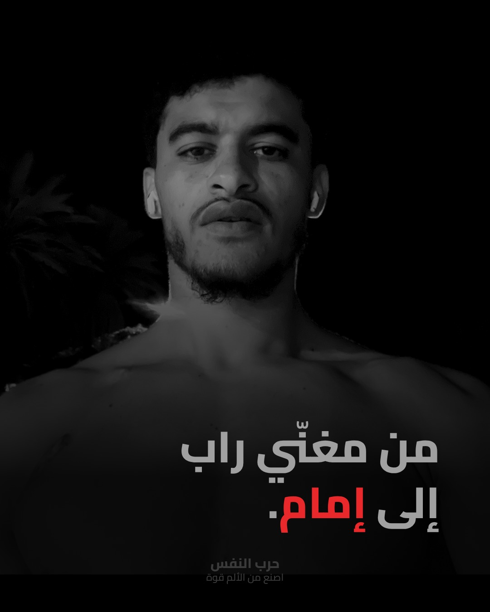
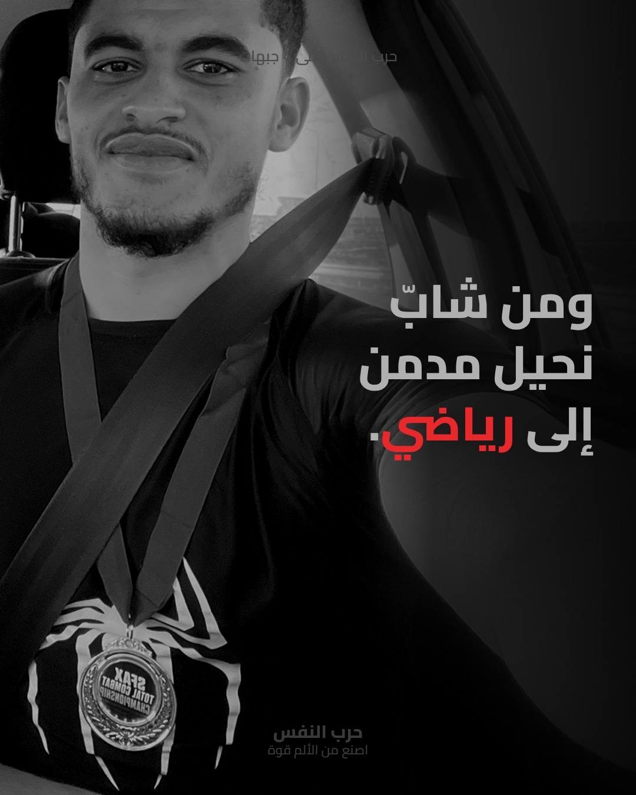
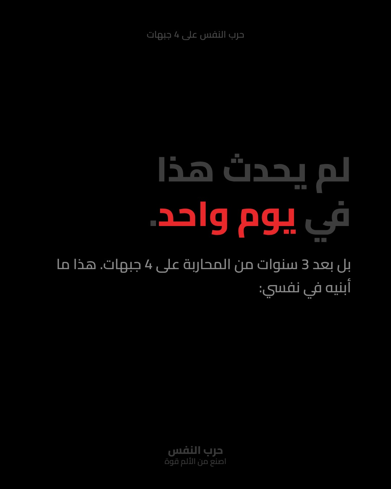
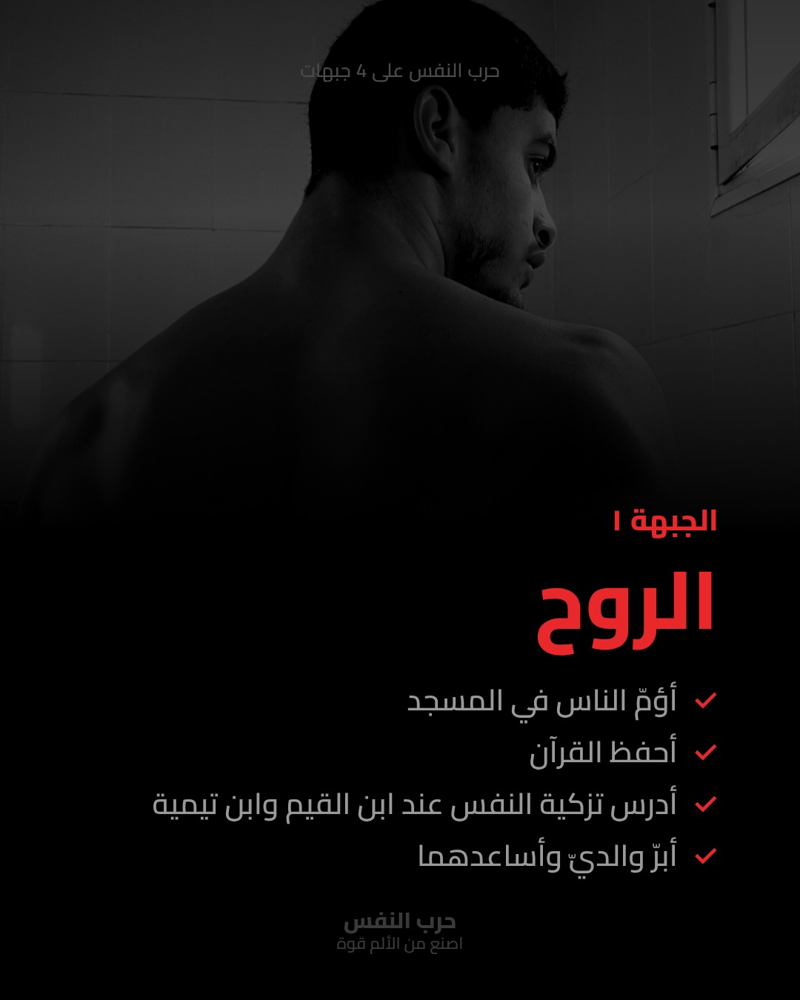
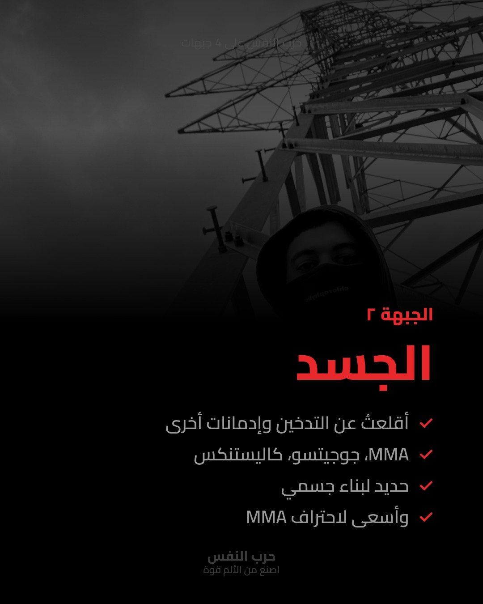
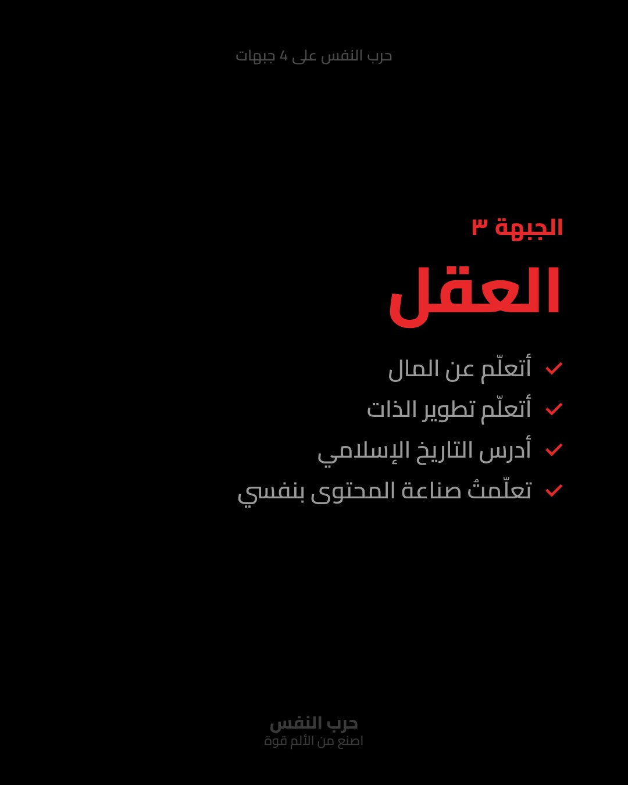
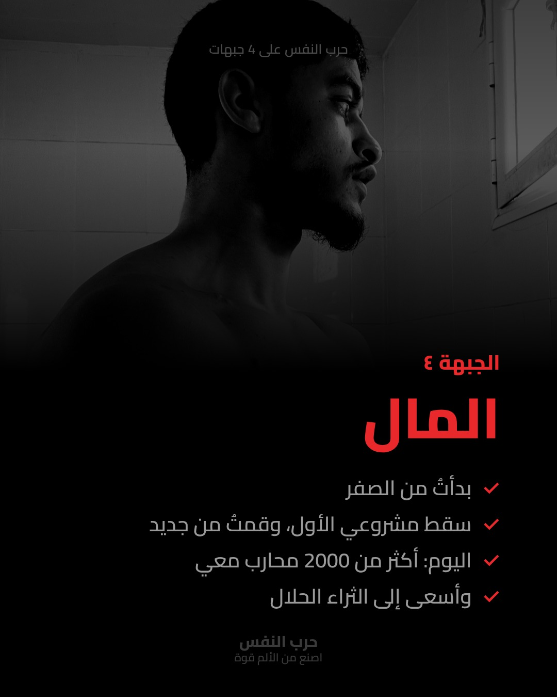
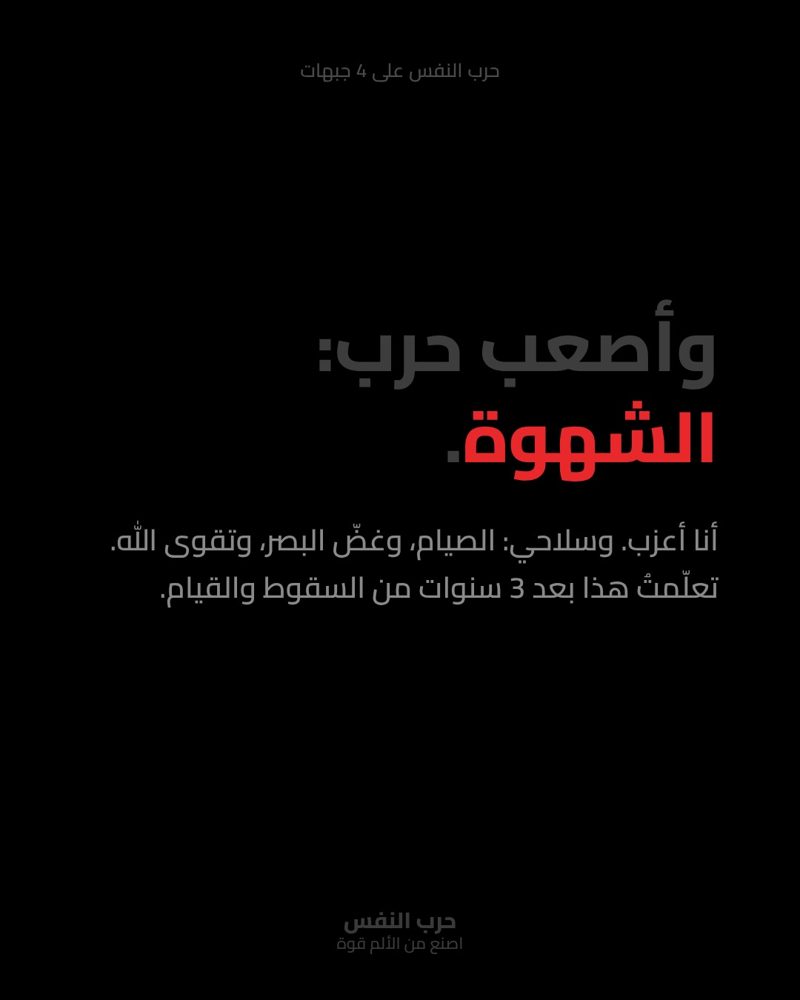
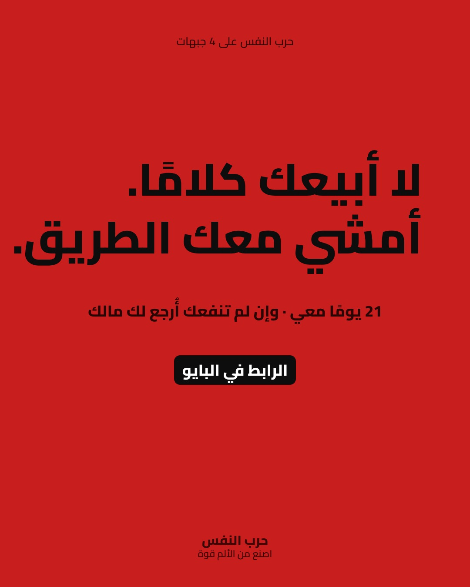

من مغنّي راب إلى إمام. ومن شابّ نحيل مدمن إلى رياضي. لم يحدث هذا في يوم واحد، بل بعد 3 سنوات من المحاربة على 4 جبهات: 1. الروح 2. الجسد 3. العقل 4. المال «المؤمن القوي خير وأحب إلى الله من المؤمن الضعيف، وفي كلٍّ خير» (رواه مسلم) لا أبيعك كلامًا، أمشي معك الطريق. 21 يومًا معي، وإن لم تنفعك المتابعة أُرجع لك مالك. الرابط في البايو 👆 أيّ جبهة هي الأصعب عليك؟ اكتبها في التعليقات 👇 #حرب_النفس #اصنع_من_الألم_قوةانسخ الكابشن